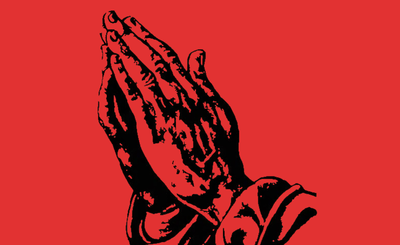

What's stopping us from governing AI?
Not bad policy.
Not bad tech.
It's a culture that worships technology like a god.
And until that shifts, governance will keep failing.

In Tech
We Trust.
The god-like authority of technology in the modern age
Rufus Pollock | Rosie Bell | Sylvie Barbier